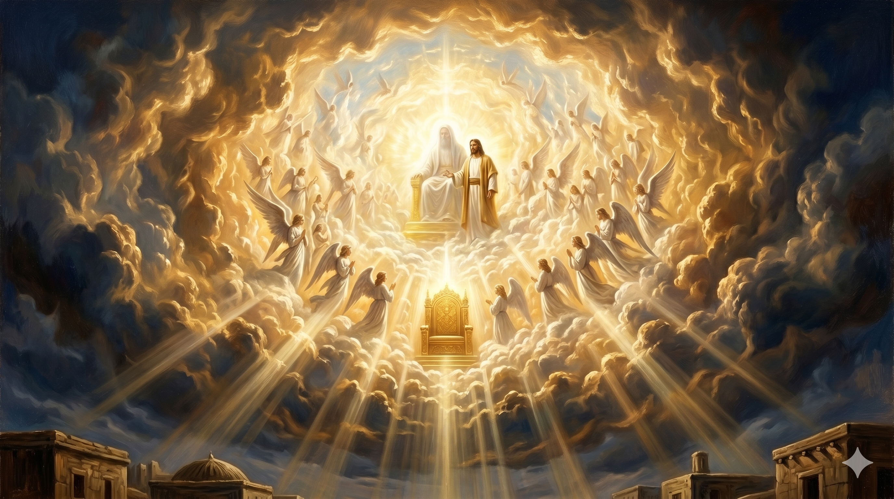

분노한 군중 앞에 선 스데반 — 돌들이 날아오는 순간에도 하늘을 우러러보며 열린 하늘과 서 계신 인자를 바라보는 첫 순교자의 얼굴
"그들이 이 말을 듣고 마음에 찔려 그를 향하여 이를 갈거늘 스데반이 성령 충만하여 하늘을 우러러 주목하여 하나님의 영광과 및 예수께서 하나님 우편에 서신 것을 보고 말하되 보라 하늘이 열리고 인자가 하나님 우편에 서신 것을 보노라 한대" — 사도행전 7:54-56
스데반의 긴 설교는 절정에 이르렀습니다. 아브라함부터 시작해 이스라엘의 역사를 꿰뚫으며 전한 그 설교는 "목이 곧고 마음과 귀에 할례를 받지 못한 사람들이여, 너희도 너희 조상들처럼 항상 성령을 거스른다"는 강렬한 책망으로 끝났습니다. 공회원들은 마음에 찔려 이를 갈았습니다. 분노는 폭발 직전이었습니다. 그러나 스데반은 두려워하지 않았습니다. 성령 충만하여 하늘을 우러러 주목했습니다. 폭풍이 몰려오는 순간, 그의 눈은 땅이 아니라 하늘을 향하고 있었습니다.
스데반은 하나님의 영광과 예수께서 하나님 우편에 서신 것을 보았습니다. 성경에서 예수님은 대부분 하나님 우편에 "앉으신" 분으로 묘사됩니다(시 110:1, 히 1:3). 그런데 이 순간 스데반이 본 것은 "서 계신" 예수님이었습니다. 순교자를 맞이하기 위해 자리에서 일어나신 것처럼, 주님은 그 자리에 서 계셨습니다. 이것은 단순한 환상이 아니라, 스데반의 신실함을 하늘이 알아보고 있다는 증거였습니다. 고난의 자리에서 하늘은 결코 외면하지 않습니다.

열린 하늘과 하나님의 영광 속에 서 계신 예수님 — 스데반의 눈에 비친 천상의 장면, 순교의 자리를 향해 일어서신 주님
사방에서 압박이 몰려오고 이를 가는 자들이 둘러싼 상황에서, 스데반의 눈은 하늘을 향했습니다. 이것은 현실 도피가 아니었습니다. 진짜 현실을 보는 것이었습니다. 눈에 보이는 분노와 폭력보다, 눈에 보이지 않는 하늘의 영광이 더 실제적임을 그는 알고 있었습니다. 우리도 삶의 고난 앞에서 때로는 주위의 험한 상황만 바라봅니다. 그러나 스데반처럼 하늘을 우러러 주목하는 연습이 필요합니다. 하나님의 영광은 가장 어두운 순간에도 빛나고 있습니다.
스데반은 "보라 하늘이 열리고"라고 외쳤습니다. 이 고백은 혼자 속으로 한 것이 아니라 공개적으로, 담대하게 선포한 것이었습니다. 죽음을 눈앞에 두고도 하늘의 실재를 증언했습니다. 신앙은 고요한 시간에만 고백하는 것이 아닙니다. 가장 힘든 순간, 가장 위험한 자리에서도 "나는 하늘을 본다"고 말할 수 있을 때 그 신앙은 참된 것입니다. 오늘 당신은 어디를 바라보고 있습니까?
이를 가는 무리 앞에서 스데반은 하늘을 우러러보았습니다.
주님은 그를 위해 자리에서 일어나 서 계셨습니다.
당신의 고난의 자리에서도, 하늘은 열려 있습니다.